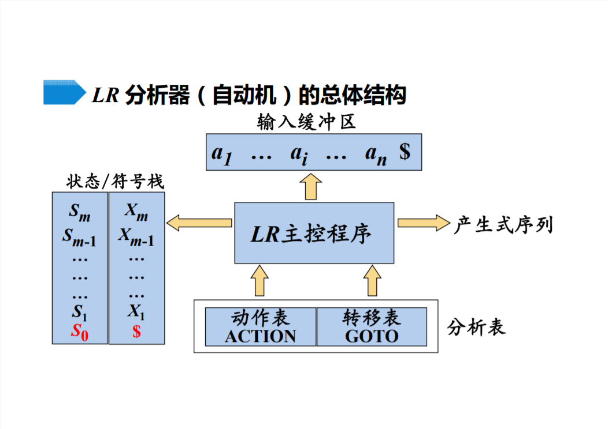
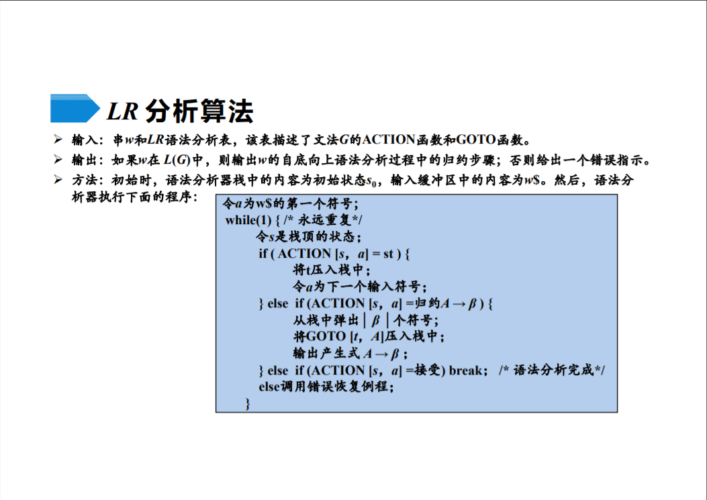
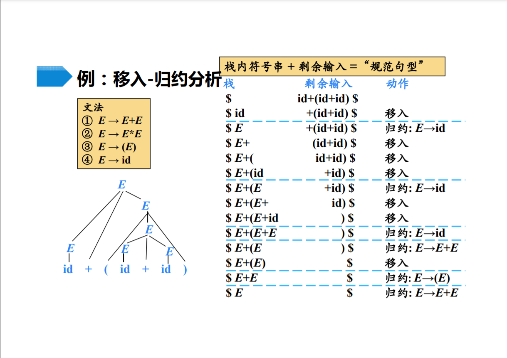

Skulpt-源码浅析-Parser
- 2022-02-01
Skulpt中Parser是一个从cpython的lib2to3派生的解析器
该Parser采用了自底向上的语法分析，也就是从分析树的底部(叶节点)向顶部(根节点)方向构造分析树。
注: Skulpt 后来搞了一个 skulpt_parser 用于 python3.9 语法解析。python3.9提出了一个 新的 使用LL(1)的 Parser。
自底向上分析
自底向上的语法分析采用最左归约方式（反向构造最右推导），其通用的分析框架为 移入-归约分析(Shift-Reduce Parsing)。
移入-归约分析
移入-归约分析的工作过程
- 在对输入串的一次从左到右扫描过程中，语法分析器将零个或多个输入符号移入到栈的顶端，
直到它可以对栈顶的一个文法符号串β进行归约为止- 然后，它将β归约为某个产生式的左部
- 语法分析器不断地重复这个循环，直到它检测到一个语法错误，或者栈中包含了开始符号且输入缓冲区为空(当进入这样的格局时，语法分析器停止运行 并宣称成功完成了语法分析)为止
移入-归约分析器可采取的4种动作
- 移入：将下一个输入符号移到栈的顶端
- 归约：被归约的符号串的右端必然处于栈顶。语法分析器在栈中确定这个串的左端，并决定用哪个非终结符来替换这个串
- 接收：宣布语法分析过程成功完成
- 报错：发现一个语法错误，并调用错误恢复子例程
LR分析法
LR文法(Knuth, 1963) 是最大的、可以构造出相应移入-归约语法分析器的文法类
- L: 对输入进行从左到右的扫描
- R: 反向构造出一个最右推导序列
- K: 需要向前查看k个输入符号的LR分析。 k = 0 和 k = 1 这两种情况具有实践意义。当省略(k)时，表示k=1
LR分析器的总体结构：

LR算法流程：

Skulpt Parser
parse
parse 需要 filename、input 参数，其中：filename 被 makeParser 用于构造 Parser对象 ， input 被 readline 用于构造 字符流。
Sk._tokenize 是一个词法分析器，解析 字符流 形成 符号流，编码为utf-8
对于字符流调用回调函数yield_，yield_需要TokenInfo类型的对象
回调函数中调用了 parser.addtoken 进行语法分析
至于分支 tokenInfo.type === T_COMMENT || tokenInfo.type === T_NL || tokenInfo.type === T_ENCODING 里的代码有什么用，我也不知道
Sk.parse = function parse (filename, input) {
var T_COMMENT = Sk.token.tokens.T_COMMENT;
var T_NL = Sk.token.tokens.T_NL;
var T_OP = Sk.token.tokens.T_OP;
var T_ENDMARKER = Sk.token.tokens.T_ENDMARKER;
var T_ENCODING = Sk.token.tokens.T_ENCODING;
var endmarker_seen = false;
var parser = makeParser(filename);
// 由于lines.pop()因此需要reverse()
function readline(input) {
var lines = input.split("\n").reverse().map(function (l) { return l + "\n"; });
return function() {
if (lines.length === 0) {
throw new Sk.builtin.Exception("EOF");
}
return lines.pop();
};
}
Sk._tokenize(filename, readline(input), "utf-8", function (tokenInfo) {
// tokenInfo.start[0]保存了token的开始行号，tokenInfo.start[1]保存了token的开始列号
// tokenInfo.end[0]保存了token的结束行号，tokenInfo.end[1]保存了token的结束列号
// tokenInfo.value保存了token
var s_lineno = tokenInfo.start[0];
var s_column = tokenInfo.start[1];
var type = null;
var prefix, lineno, column;
if (tokenInfo.type === T_COMMENT || tokenInfo.type === T_NL || tokenInfo.type === T_ENCODING) {
prefix += tokenInfo.value;
lineno = tokenInfo.end[0];
column = tokenInfo.end[1];
if (tokenInfo.string[tokenInfo.string.length - 1] === "\n") {
lineno += 1;
column = 0;
}
} else {
// 如果是运算符，用更加具体的type取代T_OP
if (tokenInfo.type === T_OP) {
type = Sk.OpMap[tokenInfo.string];
}
// context 包含了 开始位置(tokenInfo.start), 结束位置(tokenInfo.end), 行(tokenInfo.line)
parser.addtoken(type || tokenInfo.type, tokenInfo.string, [tokenInfo.start, tokenInfo.end, tokenInfo.line]);
if (tokenInfo.type === T_ENDMARKER) {
endmarker_seen = true;
}
}
});
// endmarker_seen 用于标记 输入是否残缺
if (!endmarker_seen) {
throw new Sk.builtin.SyntaxError("incomplete input", this.filename);
}
return {"cst": parser.rootnode, "flags": parser.p_flags};
};Parser的构造
makeParser 用于构造一个Parser对象，需要传入filename和style，但实际上只要传入filename就好。当style为undefined时会被置为"file_input"，而Parser也仅支持"file_input"。
然后 makeParser 创建了一个 Parser对象，并且调用了 setup 方法，最后将 Parser对象 返回。
Parser对象 的 构造函数 需要 filename 和 grammar 两个参数。grammar就是LR分析器所需要的分析表，makeParser传入的实参是 Sk.ParseTables。Parser构造函数中还将 p_flags 赋值为 0，p_flags与输出相关。
Sk.ParseTables 源码位于 parse_tables.js，该文件的生成脚本源码位于regenparser.js, 本质上使用了pgen中的代码生成 parse_tables.js
setup 构造了 LR分析器所需要的状态符号栈。栈中元素包含属性 dfa、state 和 node，node 包含属性 type、value、context 和 children
function makeParser (filename, style) {
if (style === undefined) {
style = "file_input";
}
var p = new Parser(filename, Sk.ParseTables);
// for closure's benefit
if (style === "file_input") {
p.setup(Sk.ParseTables.sym.file_input);
} else {
Sk.asserts.fail("todo;");
}
return p;
}
function Parser (filename, grammar) {
this.filename = filename;
this.grammar = grammar;
this.p_flags = 0;
return this;
}
Parser.prototype.setup = function (start) {
var stackentry;
var newnode;
start = start || this.grammar.start;
//print("START:"+start);
newnode =
{
type : start,
value : null,
context : null,
children: []
};
stackentry =
{
dfa : this.grammar.dfas[start],
state: 0,
node : newnode
};
this.stack = [stackentry];
this.used_names = {};
};setup中 的 node 为 下图 中 的 E或id

addtoken
addtoken 需要 type, value, context 三个参数
- 例如 第2行第1列有个abc
- type 为 Sk.token.tokens.T_NAME
- value 为 abc
- context 包含了 具体信息， 例如context[0][0]=2, context[0][1]=1
实际上就是 查表 然后进行移入归约操作
Parser.prototype.addtoken = function (type, value, context) {
var errline, itsfirst, itsdfa, state, v, t, newstate, i, a, arcs, first, states, tp;
var ilabel = this.classify(type, value, context);
OUTERWHILE:
while (true) {
tp = this.stack[this.stack.length - 1];
states = tp.dfa[0];
first = tp.dfa[1];
arcs = states[tp.state];
// LR算法 中的 查表 操作
for (a = 0; a < arcs.length; ++a) {
i = arcs[a][0];
newstate = arcs[a][1];
t = this.grammar.labels[i][0];
v = this.grammar.labels[i][1];
if (ilabel === i) {
// 本处进行归约操作
Sk.asserts.assert(t < 256);
this.shift(type, value, newstate, context);
// pop while we are in an accept-only state
state = newstate;
while (states[state].length === 1
&& states[state][0][0] === 0
&& states[state][0][1] === state) {
this.pop();
if (this.stack.length === 0) { return true; }
tp = this.stack[this.stack.length - 1];
state = tp.state;
states = tp.dfa[0];
first = tp.dfa[1];
}
return false;
} else if (t >= 256) {
itsdfa = this.grammar.dfas[t];
itsfirst = itsdfa[1];
if (itsfirst.hasOwnProperty(ilabel)) {
this.push(t, this.grammar.dfas[t], newstate, context);
continue OUTERWHILE;
}
}
}
if (findInDfa(arcs, [0, tp.state])) {
this.pop();
if (this.stack.length === 0) {
throw new Sk.builtin.SyntaxError("too much input", this.filename);
}
} else {
errline = context[0][0];
throw new Sk.builtin.SyntaxError("bad input", this.filename, errline, context);
}
}
};classify
classify 将 终结符类型 转成 对应数字
Parser.prototype.classify = function (type, value, context) {
var ilabel;
if (type === Sk.token.tokens.T_NAME) {
this.used_names[value] = true;
// 是不是 keywords
ilabel = this.grammar.keywords.hasOwnProperty(value) && this.grammar.keywords[value];
// Check for handling print as a builtin function
if(value === "print" && (this.p_flags & Parser.CO_FUTURE_PRINT_FUNCTION || Sk.__future__.print_function === true)) {
ilabel = false; // ilabel determines if the value is a keyword
}
if (ilabel) { return ilabel; }
}
ilabel = this.grammar.tokens.hasOwnProperty(type) && this.grammar.tokens[type];
if (!ilabel) {
// throw new Sk.builtin.SyntaxError("bad token", type, value, context);
// Questionable modification to put line number in position 2
// like everywhere else and filename in position 1.
let descr = "#"+type;
for (let i in Sk.token.tokens) {
if (Sk.token.tokens[i] == type) {
descr = i;
break;
}
}
throw new Sk.builtin.SyntaxError("bad token " + descr, this.filename, context[0][0], context);
}
return ilabel;
};push
Parser 的 push 方法 用于添加 非终结符
push方法 将 栈顶元素 的 state 改为 newstate
该方法用 type、context 构造了 newnode，进而用newdfa、newnode构造了新的对象入栈
Parser.prototype.push = function (type, newdfa, newstate, context) {
var dfa = this.stack[this.stack.length - 1].dfa;
var node = this.stack[this.stack.length - 1].node;
var newnode = {
type : type,
value : null,
lineno : context[0][0], // throwing away end here to match cpython
col_offset: context[0][1],
children : []
};
this.stack[this.stack.length - 1] = {
dfa : dfa,
state: newstate,
node : node
};
this.stack.push({
dfa : newdfa,
state: 0,
node : newnode
});
};shift
Parser.prototype.shift = function (type, value, newstate, context) {
var dfa = this.stack[this.stack.length - 1].dfa;
var state = this.stack[this.stack.length - 1].state;
var node = this.stack[this.stack.length - 1].node;
var newnode = {
type : type,
value : value,
lineno : context[0][0],
col_offset: context[0][1],
children : null
};
if (newnode) {
node.children.push(newnode);
}
this.stack[this.stack.length - 1] = {
dfa : dfa,
state: newstate,
node : node
};
};pop
弹出状态符号栈的栈顶元素。
如果栈内不止一个元素,自底向上构造语法树; 否则rootnode指向语法树根节点.
Parser.prototype.pop = function () {
var node;
var pop = this.stack.pop();
var newnode = pop.node;
if (newnode) {
if (this.stack.length !== 0) {
node = this.stack[this.stack.length - 1].node;
node.children.push(newnode);
} else {
this.rootnode = newnode;
this.rootnode.used_names = this.used_names;
}
}
};